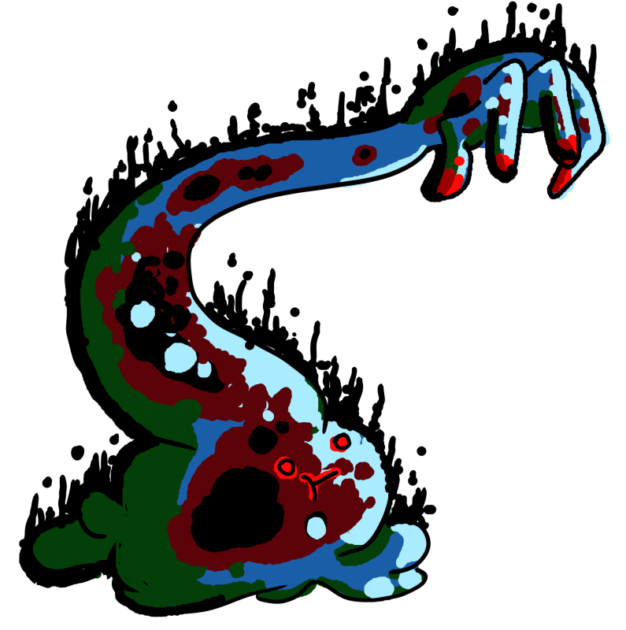

Slarm
Grapply Fae

Lv 4 Slime Creature, Experience Granted: 25, Size: Big, Speed: 20 Feet
Immune corrosive damage. Weak to fire. Strong against merfolk.
HP 100, Energy 10, Defense 1
Standard Actions 3, Extra Actions 1
Toughness 17, Evasion 15, Willpower 10
Detect 17, Inspect 17, Stealth 15
Yank
Type: Attack
Action Type: Standard, Decisive
Energy Cost: 1
Slarm chooses a creature target the same size as itself or smaller within 30 feet of itself. That target makes an Evasion vs 18 roll. On a failure, that target is now in an unoccupied adjacent space of Slarm and takes 6/12 corrosive damage.
Acid Spray
Type: Attack
Action Type: Standard, Decisive
Energy Cost: 0
Slarm chooses a creature target within 5 feet of itself. Slarm makes a +8 roll against that target's Agility Threshold. On a hit, the target takes 7/14 corrosive damage.
Acid Spray
Type: Attack, Magical
Action Type: Standard, Decisive
Energy Cost: 1
Range: 30 feet, Targets: 1 creature.
Roll: Evasion vs 16
Failure: The target takes 10/16 Sharp damage. The target is dazed.